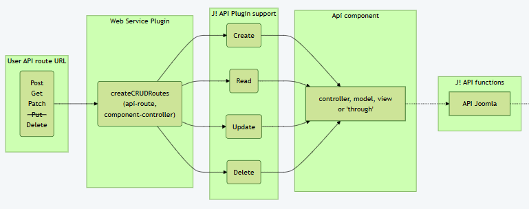

## Bare minimum component  * plg_webservices_secondhand * com_secondhand This example is valid only if the API is intended to address component tables.
## webservice API plugin The general base component folder structure ```[7,10] plg_secondhand ├─── language │ └─── en-GB │ ├─── plg_content_secondhand.ini │ └─── plg_content_secondhand.sys.ini ├─── services │ └─── provider.php ├─── src │ └─── Extension │ └─── Secondhand.php └─── secondhand.xml ``` Structure similar to other plugins * provider.php Registers the service provider with a DI container. * Secondhand.php Endpoint definitions
## Service provider 'services/provider.php' Here the 'secondhand' API definition class is instantiated <br>and listed as a service provider. ```php [14-15] use Joomla\... use Bluebox\Plugin\WebServices\Secondhand\Extension\Secondhand; return new class () implements ServiceProviderInterface{ /* Registers the service provider with a DI container. * @param Container $container The DI container. * @return void */ public function register(Container $container): void { $container->set( PluginInterface::class, $container->lazy(Secondhand::class, function (Container $container){ $plugin = new Secondhand( (array) PluginHelper::getPlugin('webservices', 'secondhand') ); $plugin->setApplication(Factory::getApplication()); return $plugin; }) ); } }; ```
## Route extension class 'src\Extension\Secondhand.php' ### part one **function getSubscribedEvents:** Register event ```php [2,5-8] /* Joomla! Webservices Plugin webservice secondhand. */ final class Secondhand extends CMSPlugin implements SubscriberInterface { /* Returns an array of events this subscriber will listen to */ public static function getSubscribedEvents(): array { return ['onBeforeApiRoute' => 'onBeforeApiRoute',]; } .... ```
## Route extension class 'src\Extension\Secondhand.php' ### part two **function onBeforeApiRoute** ```php [3|5-6,13|8-12] public function onBeforeApiRoute(BeforeApiRouteEvent $event): void { $router = $event->getRouter(); $defaults = ['component' => 'com_secondhand']; $getDefaults = array_merge(['public' => false], $defaults); $router->createCRUDRoutes( 'v1/secondhand/books', 'books', $getDefaults ); } ``` **createCRUDRoutes:** Here the magic happens.
## createCRUDRoutes ### Internal routes created <p></p> function createCRUDRoutes has defined all CRUD routes internally
### The magic applied instead of ```php $router->createCRUDRoutes( 'v1/secondhand/books', 'books', $getDefaults ); ``` We could have written: ```php $routes = [ new Route(['GET'], 'v1/secondhand/books', 'books.displayList', [], $defaults), new Route(['GET'], 'v1/secondhand/books/:id', 'books.displayItem', ['id' => '(\d+)'], $defaults), new Route(['POST'], 'v1/secondhand/books', 'books.add', [], $defaults), new Route(['PATCH'], 'v1/secondhand/books/:id', 'books.edit', ['id' => '(\d+)'], $defaults), new Route(['DELETE'], 'v1/secondhand/books/:id', 'books.delete', ['id' => '(\d+)'], $defaults), ]; $this->addRoutes($routes); ``` Which tells us `new Route(...)` will be the syntax for all our defined API routes
## General Route function parameters ```php[1,3] new Route('CRUD' command, endpoint, 'controller'.'function', [var.regex], defaults); $router->createCRUDRoutes('base endpoint', 'controller', defaults); ``` | | example | description | |:--------|:--------------------------------|:-------------------------------------------| | 'CRUD' command | GET,POST,PATCH,DELETE | | | endpoint | `v1/secondhand/books` | route path | | | `v1/secondhand/books/:id` | route path with variable | | controller | `books` | path to controller and view | | function | `displayItem` | any function in defined controller can be called | | var.regex | `['id' => '(\d+)']` | Regex to catch and secure the variable value | | defaults | `['component' => 'com_secondhand',` | array of 'configuration' variables | | defaults | `'public' => false]` | more see next page |
## X-Token and $getDefaults The route needs to know the component name ```php $defaults = ['component' => 'com_secondhand']; ``` **Joomla X-Token**<br> The X-Token is the key to the API door and is expected to <br> be part of the curl/http data send. The X-Token can be <br> fetched in user admin account after save. With defaults flag "`'public' => true`" on local development systems we <br> enable API calls without X-Token. ```php [2|3] // ToDo: Remove when tests finished, enables access without token $getDefaults = array_merge(['public' => true], $defaults); $getDefaults = array_merge(['public' => false], $defaults); ``` Please make sure to remove this before going online Above $getDefaults is passed as last parameter to the route <br>function definition
 ## Minimum component When the API just needs to handle table data then <br> following minimuum component structure is possible
## com_secondhand Second hand books component with <br> just the one books table and matching view. Table items * id * name * author * isbn * publish, created, ... <br> <br>
## Manifest file 'secondhand.xml' Following is an excerpt as the content is known ```xml [6,15-20] <?xml version="1.0" encoding="utf-8"?> <extension type="plugin" group="webservices" method="upgrade"> <name>plg_webservices_secondhand</name> ... <description>PLG_WEBSERVICES_SECONDHAND_XML_DESCRIPTION</description> <namespace path="src">Bluebox\Plugin\WebServices\Secondhand</namespace> <files> <folder plugin="secondhand">services</folder> <folder>language</folder> <folder>services</folder> <folder>src</folder> <file>secondhand.xml</file> </files> <api> <files folder="api"> <folder>src</folder> </files> </api> ... </extension> ``` Attention: The namespace contains 'WebSpaces' with an uppercase 'S' in the middle
## API part of the component 'com_secondhand' * We have to insert section API into manifest * We have to add code into the joomla root API folder. <br> <br> ### The API sub folder structure: From the root of the joomla web page ``` [1|4|7] api\components\com_secondhand\ ├─── src ├─── Controller │ └─── BooksController.php └─── View └─── Books └─── JsonapiView.php ``` Attention: The API folder structure is similar to other component<br> structures with the exception that the controller folder keeps all<br> `nnnController.php` files without further subdirectories.<br> The view code is always kept in a JsonapiView.php file in a named folder
## Controller in API part 'BooksController.php' ```php [5,8,11] namespace Bluebox\Component\Secondhand\Api\Controller; ... class BooksController extends ApiController { // The content type of the item. protected $contentType = 'books'; // The default view for the display method. protected $default_view = 'books'; // Implement other methods like read, update, delete as needed ... } ``` Within the minimal controller only two variables need to be defined, <br> as the controller class inherits from ApiController. * The `$contentType` tells which component model to use * The `$default_view` tells which view does render the collected data.
## View in API part 'JsonapiView.php' Inside the minimum controller there are only two variables to <br> implement as the JsonapiView class inherits from BaseApiView. * The `$fieldsToRenderItem` tells which variables of the table <br>to show for single item view<br> * The `$fieldsToRenderList` tells which view does render the <br>collected data. ```php protected $fieldsToRenderItem = [] 'id', 'title', 'alias', 'isbn', 'description', 'note', 'published', 'created', 'created_by', 'modified', 'modified_by', ]; ``` ```php protected $fieldsToRenderList = [ 'id', 'title', 'alias', 'isbn', 'description', 'note', 'published', 'created', 'created_by', 'modified', 'modified_by', ]; ```
## Resumee: We defined the API router interface. ```php $router->createCRUDRoutes( 'v1/secondhand/books', 'books', $getDefaults ); ``` We defined the table and the view ```php protected $contentType = 'books'; protected $default_view = 'books'; ``` We defined what the JSON response should contain for list and item. ```php protected $fieldsToRenderList = ['id', 'title', 'alias', 'isbn', 'description', .... protected $fieldsToRenderItem = ['id', 'title', 'alias', 'isbn', 'description', .... ``` This is it ! The plugin and two wo files (`BooksController.php`, `JsonapiView.php`) <br> enable CRUD ACCESS over the API of joomla. <br> The joomla api base classes support is all <br> what is needed to handle basic table data.
## What API Routes do we get ?
## API route definitions created The CRUD definitions result in following API routes: | Command | endpoint | Comment | |:--------|:--------------------------------|:-------------------------------------------| | GET | `v1/secondhand/books` | lists all books with variables | | GET | `v1/secondhand/books/:id` | lists variables of book | | POST | `v1/secondhand/books` | creates new book with data | | PATCH | `v1/secondhand/books/:id` | writes parameters into selected book | | DELETE | `v1/secondhand/books/:id` | deletes selected book | Attention: There is no PUT support in Joomla
## Calling Joomla API and json response <br> <br> How can we call the routes and <br> <br> how does the response look like
## GET v1/secondhand/books (lists all books with variables)</h2> **Response:** | http code | content-type | response | |-----------|-----------------------------------|---------------------------------------------------------------------------------------------------------------------| | `200` | `application/json; charset=UTF-8` | ```json {"type": "books","id": "2","attributes": {"id": 2,"title": "Why We Sleep","alias": "why-we-sleep",, ...}``` | **Example CURL:** ```batch curl -s --show-error -X GET "http://127.0.0.1/web_page/api/index.php/v1/secondhand/books" -H "Content-Type: application/json" -H "X-Joomla-Token: ..." ``` **Example http:** ```http ### GET http://127.0.0.1/web_page/api/index.php/v1/secondhand/books Accept: application/vnd.api+json Content-Type: application/json X-Joomla-Token: ... ```
## GET v1/secondhand/books/:id **Parameters:** None **Responses:** | http code | content-type | response | |---------------|-----------------------------------|-----------------------------------------------------------------------------------------------------------------------------| | `200` | `application/json;charset=UTF-8` | ```json {"type": "books","id": "2","attributes": {"id": 2,"title": "Why We Sleep","alias": "why-we-sleep",, ... }``` | **Example CURL:** ```batch curl -s --show-error -X GET "http://127.0.0.1/web_page/api/index.php/v1/secondhand/books/1" -H "Content-Type: application/json" -H "X-Joomla-Token: ..." ``` **Example http:** ```http ### GET http://127.0.0.1/web_page/api/index.php/v1/secondhand/books/1 Accept: application/vnd.api+json Content-Type: application/json X-Joomla-Token: ... ```
## POST v1/secondhand/books (part 1) **Parameters:** | name | type | data type | description | |---------------------|---------|--------------|-------------| | all book parameters | % | Json, string | | **Responses:** | http code | content-type | response | |---------------|-----------------------------------|----------------------------------------------------------------------------------------------------------------------------| | `200` | `application/json;charset=UTF-8` | ```json {"type": "books", "id": "2", "attributes": { "id": 1, "asset_id": 105, "title": "Global Configuration", ... }``` | **Example cURL:** ```shell curl -s --show-error -X POST "http://127.0.0.1/web_page/api/index.php/v1/secondhand/books" -d "{\"title\":\"My book\",\"isbn\":\"12-3456-78-90\",\"author\":\"john breeze\",\"description\":\"The next book i write\",\"published\":1}" -H "Content-Type: application/json" -H "X-Joomla-Token: ..." ```
## POST v1/secondhand/books (part 2) **Example http:** ```http ### POST http://127.0.0.1/web_page/api/index.php/v1/secondhand/books Accept: application/vnd.api+json Content-Type: application/json X-Joomla-Token: { "title": "My book", "isbn": "12-3456-78-90", "author": "john breeze", "description": "The next book i write", "published": 1 } ```
## PATCH v1/secondhand/books/:id (part 1) **Parameters:** | name | type | data type | description | |-------|-----------|-------------------------|-----------------------------------------------------------------------| | title | % | string | | | isbn | % | string | | | ... | % | string | | **Responses:** | http code | content-type | response | |---------------|-----------------------------------|---------------------------------------------------------------------| | `200` | `application/json;charset=UTF-8` | ```json {"type": "books", "id": "2", "attributes": { "id": 1, "asset_id": 105, "title": "Global Configuration", ... }``` | **Example cURL:** ```shell curl -s --show-error -X PATCH "http://127.0.0.1/web_page/api/index.php/v1/secondhand/1/books" -d "{\"published\":-2,\"isbn\":\"1234-4567-8890\"} " -H "Content-Type: application/json" -H "X-Joomla-Token: ..." ```
## PATCH v1/secondhand/books/:id (part 2) **Example http:** ```http ### PATCH http://127.0.0.1/web_page/api/index.php/v1/secondhand/books/1 Accept: application/vnd.api+json Content-Type: application/json X-Joomla-Token: { "published": -2, "isbn": "1234-4567-8890", } ```
## DELETE secondhand/books/:id Just a reminder: Delete needs trash state before. <br> Please use 'PATCH' command with "published": -2, (see above) **Parameters:** None **Responses:** None **Example cURL:** ```shell curl -s --show-error -X DELETE "http://127.0.0.1/web_page/api/index.php/v1/secondhand/books/2" -H "Content-Type: application/json" -H "X-Joomla-Token: ..." ``` **Example http:** ```http ### DELETE http://127.0.0.1/web_page/api/index.php/v1/secondhand/books/2 Accept: application/vnd.api+json Content-Type: application/json X-Joomla-Token: ```
## API routes responses (json) The results are JSON style and contain the links to actual call and next, previous and last page #### GET book ``` { "links": { "self": "http://127.0.0.1/api_6x/api/index.php/v1/secondhand/books/1" }, "data": { "type": "books", "id": "1", "attributes": { "id": 1, "title": "test 01", "alias": "test-01", "isbn": "1234567890", "description": "", "published": 1, "created": "2026-05-24 17:23:19", "created_by": 775, "modified": "2026-05-24 17:42:09", "modified_by": 775, "note": "" } } } ```
#### GET books ```json { "links": { "self": "http://127.0.0.1/api_6x/api/index.php/v1/secondhand/books" }, "data": [ { "type": "books", "id": "2", "attributes": { "id": 2, "title": "Why We Sleep", "alias": "why-we-sleep", "isbn": "da1b2048-cec2-4127-950e-35bc4b3ee181", "description": "Sleep is one of the most important aspects of our life, health and longevity and yet it is increasingly neglected in twenty-first-century society, with devastating consequences- every major disease in the developed world - Alzheimer - s, cancer, obesity, diabetes - has very strong links to deficient sleep. In this book, the first of its kind written by a scientific expert, Professor Matthew Walker explores twenty years of cutting-edge research to solve the mystery of why sleep matters. Looking at creatures from across the animal kingdom as well as major human studies, Why We Sleep delves in to everything from what really happens in our brains and bodies when we dream to how caffeine and alcohol affect sleep and why our sleep patterns change across a lifetime, transforming our appreciation of the extraordinary phenomenon that safeguards our existence.", "published": 1, "created": "2026-05-27 09:53:06", "created_by": 776, "modified": "2026-05-27 09:53:06", "modified_by": 776, "note": "" } }, { "type": "books", "id": "3", "attributes": { "id": 3, "title": "My book", "alias": "my-book", "isbn": "12-3456-78-90", "description": "The next book i write", "published": 1, "created": "2026-06-23 11:40:16", "created_by": 776, "modified": "2026-06-23 11:40:16", "modified_by": 776, "note": "" } } ], "meta": { "total-pages": 1 } } ```
#### Post book ```json { "links": { "self": "http://127.0.0.1/api_6x/api/index.php/v1/secondhand/books" }, "data": { "type": "books", "id": "3", "attributes": { "id": 3, "title": "My book", "alias": "my-book", "isbn": "12-3456-78-90", "description": "The next book i write", "published": 1, "created": "2026-06-23 11:40:16", "created_by": 776, "modified": "2026-06-23 11:40:16", "modified_by": 776, "note": "" } } } ```
#### Patch book: after trash ("published": -2) ```json [14] { "links": { "self": "http://127.0.0.1/api_6x/api/index.php/v1/secondhand/books/4" }, "data": { "type": "books", "id": "4", "attributes": { "id": 4, "title": "My book", "alias": "my-book-7", "isbn": "12-3456-78-90", "description": "The next book i write", "published": -2, "created": "2026-05-26 16:25:09", "created_by": 776, "modified": "2026-05-26 16:41:17", "modified_by": 776, "note": "" } } } ```